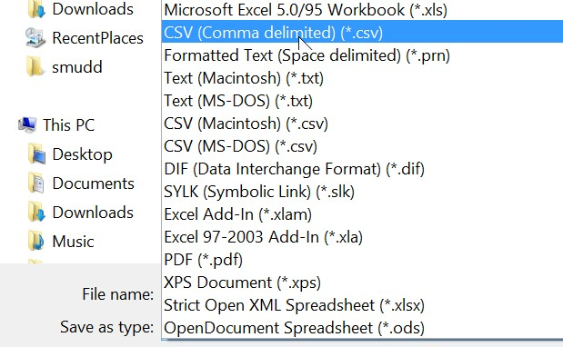

Preface by Simon Mudd
Calling this a "book" is a bit presumptuous. Rather, this is a collection of notes on simple operations within QGIS. It stems from a course at Edinburgh where the topic is Geomorphology but for the course project students need to analyse topographic data. This is not meant to be a course on QGIS! However if you are just looking to get started with the very basics you might find it helpful.
1. Background and Motivation
QGIS is a free and open source Geographic Information System (GIS). This book contains instructions on how to perform basic operations within QGIS. It is not meant to be a QGIS course, but rather should get you started if you just want to look at some data.
If you want to actually gain a deeper understanding of QGIS there are many excellent resources:
-
http://www.qgistutorials.com/en/docs/learning_resources.html A curated collection of QGIS learning resources
-
http://qgis-tutorials.mangomap.com/ A series of brief videos explaining simple QGIS tasks
-
http://gis.stackexchange.com/questions/3651/where-to-find-qgis-tutorials-and-web-resources Another list of QGIS resources.
In addition, QGIS now has a large, active and growing user community and if you type in a question about QGIS into a search engine you are almost certain to find a solution to your problem.
So, with all of these fantastic resources, why, you ask, am I writing these notes? In short, my students need to do a very specific subset of GIS tasks; these tasks are explained here. Hopefully the result is more efficient then sending many students separately to the myriad of QGIS websites.
1.1. The QGIS version used for this book
We use the long term release (LTE) version of QGIS 2.14 (Essen): http://www.qgis.org/en/site/forusers/download.html
1.2. Basic QGIS layout
When you load QGIS you will see a bunch of toolbars and panels. This brief section describes a few of the key elements. If you want more detail see the QGIS documentation: https://docs.qgis.org/2.2/en/docs/training_manual/introduction/overview.html
The basic layout of QGIS looks like this:
On the right you will see some "panels". You can drag these around the screen if you like. In addition, you can right click in the menu bars near the top of the window to select different panels.
If you accidentally remove a panel you can get it back by right clicking near the top of the page and reselecting the panel.
The layers panel shows you what data you currently have loaded into QGIS (see bottom left in above images: there is one layer loaded called WAWater).
In the screen is also a panel for adding data, which is called the Manage layers toolbar:

| In the above image I have moved the toolbar to display horizontally; any of these toolbars or panels can be moved around by clicking and dragging them. |
If you look below the actual data window, which in QGIS is called the map canvas (where in the above images the layer WAWater is displayed), you see some important information in what QGIS calls the status bar.
This contains the location of your mouse pointer in the map canvas, some information about scale and rotation of your map, and importantly the projection. Map projections all have something called an EPSG number, so for example the British National Grid is EPSG:27700, the global WGS84 projection is EPSG:4326, and WGS UTM coordinates for the northern hemisphere are EPSG:326XX where the XX is the zone number, and EPSG:327XX is for the southern hemisphere. You can read more on projections in our appendix.
Now that you have some idea about what the main QGIS window looks like, it is time to move on and add some data.
2. Adding data
This chapter details the basics of adding data to QGIS. Before you add any data, you should know that geographic data comes in two basic flavours: raster and vector data.
-
Raster data is built on a regular grid. It has pixels that contain different values. If the raster data has "bands" it just means that there are multiple values assigned to each pixel. The most common version of raster bands is for image data that has a red, green and blue band (RGB).
-
Vector data, in a GIS context, actually means a number of related data types that contain locations at specific points. So points, lines or polylines, and polygons are all considered vector data. You can read about the differences here: https://en.wikipedia.org/wiki/GIS_file_formats#Vector_formats
For each of these two data types, there are many different file formats that QGIS can read. If you want to read about them the QGIS documentation has lists for supported vector file formats, and for rasters QGIS supports anything supported by another bit of software called GDAL: here is the list of supported raster formats. In the following sections we will very briefly explain how to import these data into QGIS.
2.1. Adding raster data
To add raster data you need to click on the part of the manage layers toolbar that looks like a checkerboard:
There are enormous numbers of raster file formats. These can broadly be broken into these categories:
-
Rasters that consist of only one file, such as the GeoTiff format. Just select that one file and off you go!
-
Rasters that have two or more files. One file holds the data and the other files hold some extra information like the projection (often in a .prj file) and header information (often in a .hdr file). The different files will all have the same prefix (e.g., WAWater.bil, WAWater.hdr, WAWater.prj). You need to select the big file that holds all the data.
-
Rasters that are made up of folders. The ESRI native format is like this, because ESRI evidently loves to make things difficult and impenetrable. Somewhere deep in one of these folders will be a large file called something like w001001.adf. You need to open that one. Why does it have such a stupid name? Only ESRI knows. There is probably a text file from 1980 sitting in a server in Redlands, CA that explains how stupid filenames are part of the ArcMap business model.
IF the raster layer has information about its projection, then the layer will just pop up in both your layer panel and your map canvas.
If the raster layer doesn’t have this information you will need to assign a projection. If you don’t know what the projection is, I am afraid I cannot help you: it is your data! If you do know what the projection should be, probably the best way to search for it is by finding its EPSG number using a search engine and then enter that in the projection search (you should see a filter box).
2.2. Adding vector data
Vector data, in a GIS, refers to a family of different types of data including points, lines, polylines, and polygons. The data are made up of points (sometimes called "vertices") that have specific locations. Unlike in a raster, these points do not need to be regularly spaced. There are a number of different varieties of vector data, the most common being ESRI shapefiles. A list of QGIS compatible formats can be found on the QGIS documentation website.
To add vector data, you need to click on the part of the manage layers toolbar that looks like a series of points connected by lines:
2.3. Import point data from text or spreadsheet
In many situations you might collect data in the field using a GPS, or get data from some other software (e.g., LSDTopoTools) that is not in a standard vector format. As long as the data has some spatial coordinates, you should be able to import it into QGIS. QGIS can read various formats but you will help yourself if you prepare your data in a common data format. Here we will describe importing data from either a spreadsheet (e.g., an .xlsx file) or a comma separated value file (.csv). One difference between ArcMap and QGIS is that ArcMap can import Excel files directly whereas in QGIS you need to convert to csv.
2.3.1. Preparing your text data or spreadsheet
These instructions refer to point data. Making polygons and lines requires information about how points are connected so we will not discuss that at this stage. For point data the key thing is to know where the points are! In the most common case one has collected data using a GPS, and written them down somewhere. We need to get these data into QGIS.
As we will see momentarily, QGIS asks for the X Field and Y Field. What these are will depend on the projection of your data.
| If you are using a GPS you need to know what in which coordinate system the GPS reports its data. Make sure you check the settings of your GPS before you start collecting data so you know the coordinate system. If you fail to do this and the data is in latitude and longitude it is usually okay to assume the coordinates are in WGS84. |
2.3.2. Geographic coordinates
-
If the coordinate system is geographic you will get latitude and longitude. This can be a little confusing because we often talk about x and y coordinates or latitude and longitude in that order, but in a sense these orders are reversed:
-
The latitude is the Y Field
-
The longitude is the X Field
-
-
If you get latitude and longitude, you might get them in degrees, minutes and seconds (e.g., 3° 10` 22``). I am afraid QGIS doesn’t really like this. You will need to convert to decimal degrees (e.g., 3.1727778). There are online converters for this. You can also just copy the coordinates in google maps and it will spit out the coordinates in decimal degrees.
2.3.3. Projected coordinates
-
If the coordinate system is projected, your data will either be in X, Y coordinates or Easting and Northing.
-
Easting is the X Field
-
Northing is the Y Field
-
2.3.4. Preparing the actual data in a spreadsheet
-
All you need to do is put your X and Y data in separate columns, and then have additional columns for the associated data. Here are two examples:
Figure 7. Data in a spreadsheet with latitude and longitude coordinatesFigure 8. Data in a spreadsheet with easting and northing -
Hopefully you get the idea: you always need two columns for location data.
-
Now, you need to save spreadsheet data as a
csvfile (ArcMap can importxlsxorxlsfiles directly but in QGIS it is easier to convert tocsv). Simply take your spreadsheet andsave asacsvfile:Figure 9. Save spreadsheet as csv -
Once you’ve done this you can move on to the import data stage.
2.3.5. Preparing the actual data in a comma separated value (csv) file
A comma separated value file (csv) is just a text file that has values separated by commas. It does what it says on the tin. You can save any Excel worksheet as a csv file (see above). The advantage of csv files is that you don’t need Excel to read the data: you can read it with any text editor. However csv files only contain the values: you can’t save graphs or formatting. If you want separate worksheets you need to save them as separate files. The second example above in csv format look like this:
easting,northing,gremlins,temperature
124061,66412,0,7.221
124135,66418,12,5.432
124137,66477,6,42.3.6. A special case: GPS coordinates and the British National Grid
The British National Grid has a system of referencing that mixes letters and numbers, following the long British tradition of conceiving systems that are inscrutable to outsiders.
When you set your GPS to British National Grid, it will spit out some numbers but also some letters. For example, you might get something like NT 51422 13172. QGIS and other GIS systems only want numbers. How do we turn these letters into numbers?
The answers is that we need to count boxes along the grid, shown below:

You need to add a digit to the front of your coordinates based on the letters. Each row and column represents a digit, and these are counted from the bottom left corner. The first row and column begin with digit 0, then next 1, and so on. The coordinate NT is in the 4th column and 7th row, but the first row and column are zero, so you put a 3 and 6 in front of the coordinates:
NT 51422 13172 → 351422, 613172
2.3.7. Another special case: csv data from LSDTopoTools
LSDTopoTools is a software package developed at the University of Edinburgh School of GeoScience for topographic analysis (if you want to use it, start here). A number of its analysis routines create csv data. These data contain latitude and longitude coordiantes: these coordinates are in a WGS84 projection, EPSG:4326. When you import csv data from LSDTopoTools make sure your projections is EPSG:4326.
2.4. Importing the data into QGIS
One you have organised your data, you can import it using the menus:
Layer→Add layer→Add Delimited Text Layer
Once you select the Add delimited text layer option, you will get a dialog box asking to upload a file:
If you select the csv file you will see that many of the fields are selected for you automatically:
| You need to check on the X Field and Y Field entries to make sure that they are correct! |
| Another gotcha is that when loading a csv file you must select csv file format just below where you select the file. |
Okay, nearly there!! Once you hit okay, you will need to select the coordinate system.
2.4.1. Selecting the coordinate system
This deserves its own header since it is so important. If you don’t choose the correct coordinate system, your data will be in the wrong place!! This is what the dialog looks like:
In the image above, I have used the filter tool to select the WGS84 UTM 30N zone (this happens to be the zone for Scotland and much of western Europe). I found it using the EPSG code. Some common EPSG codes are listed in this table, and you can search for codes here: http://www.spatialreference.org/.
2.5. Saving your imported data
You can keep your data in csv format, but if you do that, you will need to import it each time you want to look at it. It is probably better to save it in a vector file format. Find the layer in the layers panel (in this example I have a layer called "Channel_width"), and right click on it. Then choose "save as":
Once you have clicked "save as", you will get this dialog box:
The ESRI shapefile format is the default. This format can be read by a number of different software packages and is a safe choice. The drawback is that it generates many different files. Another option is the GeoJSON format, which is frequently used in web mapping applications. We recommend using one of these two formats.
| QGIS is a bit picky about the file names when you save the file; you should use the "browse" dialog and name the file there rather than just typing a name. |
You should notice that the new file has appeared in the layers dialog:
You can now right click on the old layer (which is just csv data) and remove it. Note if you just want to zoom in on just your imported data, you can right click on the layer and select "zoom to layer":
2.6. Summary
3. Manipulating vector data
Occasionally you will need to adjust vector data, or add data categgories to your data based on other datasets.
3.1. Adjusting point locations
Handheld GPS units are often used in the field to determine location of sampling points. The accuracy of GPS measurements varies, and if you are working with a relatively high resolution DEM (e.g., 5 m resolution or better).
In this example we will look at some point data that was collected in a channel. We have extracted drainage area (using LSDTopoTools), in the image below the channels are those with high drainage area and have purple colours:
In this image, you can see that the channel point locations are not all on the channel. THis is because the DEM has a pixel size of 5 metres and the error on the GPS unit is greater than 5 metres. Also, in some cases the channel routing algorithms, combined with a noisy DEM, route the channels to the wrong place. In addition, one of these points seems spurious (the one anomalously to the East), so we might remove it from the dataset.
To edit the points, right click on the layer (not the csv file but a vector layer you created in previous steps) and select "toggle editing":
Once you do this the editing toolbar will become active:
You can then select the "node tool" to move nodes to the channel. You can also delete nodes.
You can either save or roll back edits (if you are unhappy with your work) by clicking on the icon with several pencils:
Once you are finished editing make sure you turn the editing back off using the "toggle editing" button.
3.2. Extracting data from a raster onto points
Another common operation is to extract raster data onto points. There is a handy tutorial about this already: http://www.qgistutorials.com/en/docs/sampling_raster_data.html, but we are going to use the previous dataset here.
First, you need to click on the plugins menu bar and select "manage and install plugins":
Search for "point sampling tool" and install:
Once you do that, the "point sampling tool" can be found under the plugins menu:
Select the layer from which to extract data, and use the "browse" button to save the file. In addition, I recommend keeping all of the data in the original vector file:
| The point extraction tool can only save files as ESRI shapefiles. |
You can then right click on the new layer, view the attribute table and copy the data into a clipboard:
This can then be pasted into a spreadsheet.
3.3. Selecting specific points
In this example we will load some data from csv and then select a subset of these points.
The data we will load comes from a chi analysis of a small Scottish catchement using LSDTopoTools. Note, chi is a Greek letter pronounced "kai".
First, we import the csv data. You should get something that looks a bit like this:
Now, suppose we only want a subset of these data. How do we extract them?
-
First, select the "select features by freehand" icon on the attributes toolbar (if this toolbar is missing, right click near the top of the QGIS window and activate it):
Figure 30. Select features by freehand -
Then, select the points you want:
Figure 31. Select the points you want -
Right click on the layer, and then choose "save as". On the "save as" menu, make sure you select the option to "Save only selected features". In this case I am exporting a shapefile since I want access to the underlying data.
Figure 32. Saving the selected features as a shapefileYou can also save as a csv file to just get the selected values. If you only want to plot, say, a river profile of selected points this can come in handy. -
Great! Now you can make new files that include just a subset of your initial data.
3.4. Summary
In this chapter we have learned how to edit vector data, and extract underlying raster data using vector data.
4. An example using data from LSDTopoTools
This chapter gives and example of computing some basic raster and csv data from LSDTopoTools and then importing it into QGIS. We use these examples in of one the practical exercises in the University of Edinburgh course, Eroding Landscapes.
One of the objectives of this exercise is to get you familiar with moving between a linux environment and QGIS,
4.1. Getting the data in linux
The data for this excercise lives online and you could download it by clicking on it. But we are going to get the data from command line in a linux environment as a gentle introduction.
These instructions have been designed for students at the Unviversity of Edinburgh but if you want to try them outside of the Edinburgh computing environment you should read our instructions about how to set up a linux environment on your home computer, regardless of its operating system.
-
The first thing you need to do is log into a linux server.
-
At Edinburgh, the computer labs should all have nx installed. Use it to log into the GeoScience servers.
-
Outside Edinburgh, you use putty.exe (windows) or ssh (MacOS or Linux) to get into a vagrant LSDTopoTools box.
-
-
If you are at Edinburgh, you need to make a terminal window in the nx desktop. All you do is right-click and select open terminal window.
-
To see where you are, type
pwdin the command line:$ pwd -
You can use
cdandcd ..to move around. When you have found a good place to put your data get it usingwget. Make sure to copy these commands and enter them one line at a time.:$ wget https://raw.githubusercontent.com/LSDtopotools/LSDTT_workshop_data/master/WA.hdr $ wget https://raw.githubusercontent.com/LSDtopotools/LSDTT_workshop_data/master/WA.bil $ wget https://raw.githubusercontent.com/LSDtopotools/LSDTT_workshop_data/master/WA_BasicMetrics01.driver $ wget https://raw.githubusercontent.com/LSDtopotools/LSDTT_workshop_data/master/WA_BasicMetrics02.driver $ wget https://raw.githubusercontent.com/LSDtopotools/LSDTT_workshop_data/master/WA_BasicMetrics03.driverType
lsafter you have done that to see if you’ve got the files. -
Now type
pwd. THIS TELLS YOU WHERE YOUR DATA IS! You need to copy this directory! In you terminal, if you highlight the text linux will automatically copy this dataFigure 33. Highlight in a terminal and the highlighted text will be copied to the clipboard.Save that directory somewhere (like text file) you can find it again later.
4.2. A first basic analysis
This first example is extremely simple but it will introduce you to calling LSDTopoTools programs.
All LSDTopoTools programs are called from a terminal window. They read a file, which we call either a parameter or driver file which tell the program what to do. When you call the program, you need to tell it where this driver file is. You do this by telling the program the directory in which the driver file is located, and the name of the driver file.
The LSDTopoTools program we will be using is called LSDTT_BasicMetrics.out.
-
We have put this program online. There are three different versions, since it has been compiled for a few different linux environments:
-
If you are at Edinburgh, the program is called
LSDTT_BasicMetrics.out. It works on Scientific Linux 7. -
If you are using our vagrant 32 bit ubuntu system, the program is called
LSDTT_BasicMetrics_U64.out. -
If you are using our vagrant 64 bit ubuntu system, the program is called
LSDTT_BasicMetrics_U32.out.
-
-
Get the version for your operating system. For example, if you are using the Edinburgh servers, get it with:
$ wget https://raw.githubusercontent.com/LSDtopotools/LSDTT_workshop_data/master/LSDTT_BasicMetrics.out -
Use
lsto make sure this program and all the data you downloaded from the last section is in the same folder. It should look like this:smudd@burn practical_02 $ ls LSDTT_BasicMetrics.out WA_BasicMetrics02.driver WA.bil WA_BasicMetrics01.driver WA_BasicMetrics03.driver WA.hdr smudd@burn practical_02 $
4.2.1. The driver file for the first analysis
-
Before we run the program we need to modify the driver file. The first driver file looks like this:
# Parameters for extracting simple surface metrics # Comments are preceeded by the hash symbol # Documentation can be found here: # https://simon-m-mudd.github.io/QGIS_book/#_an_example_using_data_from_lsdtopotools # These are parameters for the file i/o # IMPORTANT: You MUST make the write directory: the code will not work if it doens't exist. read path: /LSDTopoTools/Topographic_projects/LSDTT_workshop_data write path: /LSDTopoTools/Topographic_projects/LSDTT_workshop_data read fname: WA write fname: WA_FirstExample channel heads fname: NULL # The data that you want printed to file write_hillshade: true -
You need to be able to edit this file. You should edit it in your host operating system (e.g. not via a terminal or nx, but rather in Windows or MacOS). In the Edinburgh compouter labs there is a text editor called PSPad. You can open that program and drag text files into it and edit them. *Do not use Wordpad or Word!! They insert all kinds of formatting and change the filenames and will, in general, mess everything up!
-
We need to ensure that the driver functions point to the correct data. Copy the location of the data by using the
pwdcommand (see last section), and paste that in to these lines (YOUR DIRECTORY WILL NOT BE THE SAME, USEpwdTO FIND THE CORRECT DIRECTORY):read path: /home/smudd/courses/Eroding_landscapes/2017/practicals/practical_02 write path: /home/smudd/courses/Eroding_landscapes/2017/practicals/practical_02The must be a space after the :character. -
Now we are going to run the program. We run it in a terminal window like this (make sure you are in the directory with the data):
$ chmod 744 LSDTT_BasicMetrics.out $ ./LSDTT_BasicMetrics.out /home/smudd/courses/Eroding_landscapes/2017/practicals/practical_02 WA_BasicMetrics01.driverThe first command (
chmod) is there just to give you permission to execute the program. The second is the actual program call. You will need to modify the directory to be the one that contains your data! -
If you had all the directory names correct, you will get some text to screen that ends with a statement about hillshading. In fact all this does is print a hillshade of the raster.
-
Open QGIS and load the raster. The new raster is in the same directory with your other data and is called
WA_FirstExample_hs.bil. To load raster data in QGIS follow these instructions: Adding raster data. The data will look like this: Figure 34. A hillshade of the Whiteadder catchement
Figure 34. A hillshade of the Whiteadder catchement -
As you can see, the DEM has quite a few artifacts. There isn’t much we can do about that, I’m afraid.
4.3. Getting surface metrics
Don’t worry, things are going to get easier. We are going to do essentially the same thing we did in the previous section:
* First we make sure directories are correct in the driver file.
* Second, we call LSDTT_BasicMetrics.out in the terminal.
-
So, this time change the
read pathandwrite pathin the fileWA_BasicMetrics02.driverto your directory. -
Run the program:
$ ./LSDTT_BasicMetrics.out /home/smudd/courses/Eroding_landscapes/2017/practicals/practical_02 WA_BasicMetrics02.driver -
This does more stuff. We can look at the driver file:
# Parameters for extracting simple surface metrics # Comments are preceded by the hash symbol # Documentation can be found here: # https://simon-m-mudd.github.io/QGIS_book/#_an_example_using_data_from_lsdtopotools # These are parameters for the file i/o # IMPORTANT: You MUST make the write directory: the code will not work if it doesn't exist. read path: /home/smudd/courses/Eroding_landscapes/2017/practicals/practical_02 write path: /home/smudd/courses/Eroding_landscapes/2017/practicals/practical_02 read fname: WA write fname: WA_SecondExample channel heads fname: NULL # Parameters for surface metrics surface_fitting_radius: 11 print_slope: true print_aspect: true print_curvature: true print_tangential_curvature: true -
In this case the program is printing slope, aspect, curvature, and tangential curvature rasters. They have filenames that reflect their contents so have a look. Slope tells you how steep the landscape is, aspect which direction the surface is pointing, curvature how, uh, curvy the landscape is (mathematically it is how quickly slope changes in space) and the tangential curvature is how curvy the landscape is in the direction of steepest descent. Essentially tangential curvature tells you how tightly curved contours are and is useful for finding valleys.
-
The way these are calculated is by fitting a surface of radius
surface_fitting_radiusto the points in the DEM and then calculating derivatives of that surface.
4.3.1. Questions and tasks for surface metrics
-
Try changing the
surface_fitting_radius. What happens?
4.4. Draniage area and channel extraction
Finally, we will compute some drainage areas and extract a channel network. To do this run the driver file WA_BasicMetrics03.driver.
-
First modify the directories in
WA_BasicMetrics03.driver. -
Run the program:
$ ./LSDTT_BasicMetrics.out /home/smudd/courses/Eroding_landscapes/2017/practicals/practical_02 WA_BasicMetrics03.driver -
Yet more stuff will come out. Some are drainage area rasters, but there is also a
csvfile,WA_ThirdExample_CN.csv. -
To load this in QGIS, follow the instructions here: Import point data from text or spreadsheet. You will get something that looks a bit like this:
 Figure 35. A simple channel network
Figure 35. A simple channel network
4.4.1. Questions for channel extraction.
-
Try changing the
threshold_contributing_pixelsparameter. What happens to the channel network. -
More advanced: You can get a smoothed elevation raster with the following driver file line:
print_smoothed_elevation: true. Try creating a smoothed elevation raster and then using this smoothed raster for the drainage extraction. You will need to change theread fname:parameter to reflect the smoothed raster.
4.5. Summary
You now have seen the basic interface of LSDTopoTools programs, got a small taste of Linux, and know a few things about QGIS. From here you should be able to move on to more advanced topographic analysis.
Appendix A: Projections and transformations
We live on the surface of a planet, Earth, that is almost a perfect sphere. Our computer screens and sheets of paper are flat. This causes all sorts of problems. The problems are addressed by using map projections. I am afraid if you use geographic data you will have to deal with projections, which, unless you are a cartographer, will be tedious and frustrating. Hopefully this appendix will help you understand how to appropriately manage projections within QGIS and other environments.
A.1. What are coordinate systems?
Coordinate systems are simply reference frames for describing position. All geographic data must be placed in a coordinate system. Over the years, cartographers have developed numerous systems so now whenever we collect geographic data there are a myriad of choices when it comes to selecting a coordinate system. A full description can be found on the ESRI website, so here we will stick to the basics.
Firstly, a coordinate system can fall into two categories:
-
A geographic coordinate system which uses spherical coordinates. Latitude and longitude are the most familiar measures of such a coordinate system since these give locations on the surface of a sphere. The units of geographic coordinate systems are angular units (e.g., degrees).
-
A projected coordinate system projects your data, collected from the surface of a sphere, onto a flat surface. National grids (like the British National Grid) tend to be in projected coordinates: they measure locations in distances (e.g., metres from a reference location, sometimes reported on easting and northing).
There are many, many different coordinate systems. For example, in the United States there are 124 (!!) local coordinate systems called State planes. Most countries have their own coordinate system. There are also global coordinate systems.
A.2. Common EPSG codes
You can search for coordinate systems on the handy http://spatialreference.org/ website.
| EPSG code | Coordinate system |
|---|---|
WGS1984 Global Geographic coordinate system. |
|
WGS1984 Universal Transverse Mercator (UTM) for the northern hemisphere. A global projected coordiante system. The XX above denotes the zone. Here is an image of the zones. |
|
WGS1984 Universal Transverse Mercator (UTM) for the southern hemisphere. A global projected coordiante system. The XX above denotes the zone. Here is an image of the zones. |
|
Web Mercator projected coordinate system (used in Google maps and Open Street Map) |
|
The British National Grid |